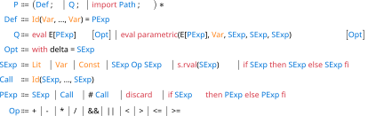
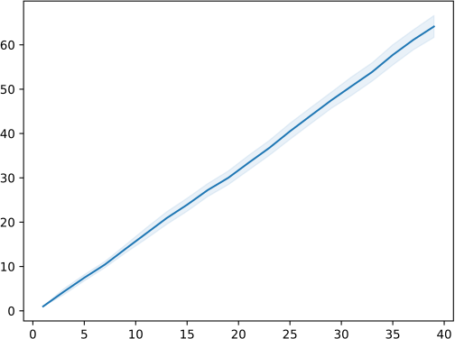

Statistical model checking¶
Statistical model checking is available through the scheck subcommand on Maude models extended with probabilities by the probability assignment method specified with its --assign option.
$ umaudemc scheck ⟨filename⟩ ⟨initial state⟩ ⟨QuaTEx file⟩ \
[ ⟨strategy⟩ ] [ --assign ⟨method⟩ ]
An expected value and a confidence interval are estimated by Monte Carlo simulations for quantitative properties specified in the Quantitative Temporal Expressions (QuaTEx) language.
$ umaudemc scheck coin head coin.quatex -a 0.01
Number of simulations = 990
Query 1 (line 5:1)
μ = 18.94242424242424 σ = 4.044209454647704 r = 0.3317202659896303
Query 2 (line 6:1)
μ = 39.977777777777774 σ = 6.012416467669121 r = 0.49315951912519634
The third argument of scheck specifies the path of a QuaTEx file with one or more queries. All assignment methods allowed by pcheck are supported here, as well as some additional ones (step and pmaude), even though some particularities should be taken into account. All general and most strategy-specific options can also be given. The simulation is controlled by the following parameters:
--alpha ⟨number⟩,-a ⟨number⟩Required significance level for the confidence interval, i.e., the long-run proportion of computed intervals that would not contain the true value of desired parameter. Its complement is known as the confidence level of the interval and it must satisfy .
--delta ⟨number⟩,-d ⟨number⟩Maximum admissible radius for the confidence interval around the mean. It can be overwritten for each query in the input QuaTEx file with a
with delta = ⟨number⟩suffix to theevalcommand.--nsims ⟨range⟩,-n ⟨number⟩Fixed number or bounds for the number of single simulations or samples. It can be either a single number, a pair - of a minimum and a maximum number of executions, or a half-opened range. When the number of simulations is bounded above, the confidence level and interval radius in the previous arguments may not be attained. When executions are discarded with the
discardoperator in QuaTEx, the upper bound refers to total executions while the lower bound refers to non-discarded executions. Its default value is30-.--block ⟨number⟩,-b ⟨number⟩Number of simulations before checking the confidence interval again. The first round of samples can be larger if the minimum number of simulations is greater than this block size, and the last round may be shorter if the maximum number of simulations is reached.
--seed ⟨number⟩,-s ⟨number⟩Seed for the random number generator or 0 to use the default random seed. The default value is 0.
--jobs ⟨number⟩,-j ⟨number⟩Number of parallel simulation processes. By default, a single process will be used and
--jobs 0will start as many jobs as CPU units in the machine.-D ⟨name⟩=⟨value⟩Define a constant to be used in QuaTEx expressions as
$name. Constants can appear as well in the bounds or step of a parametric query and in thewith deltasuffix ofevalstatements.--format ⟨name⟩,-f ⟨name⟩Output format for the simulation result, either
text(the default) orjson.--assign ⟨method⟩The probability assignment method, as explained above. Instead of the literal description of the method, a filename prefixed by
@may be entered to load it from file. The default method isstepwhen a strategy is provided anduniformotherwise.--plot,-pPlots the results of all parametric queries in the input file: a line chart will display the mean of each parametric query for the input value with the radius of the confidence interval highlighted around that line. Matplotlib is required to use this option.
--distribute ⟨path⟩Distribute the computation among some machines specified in the provided file. More information in Distributed model checking.
--dump ⟨path⟩Dump the results of the query evaluation to the given file. When running parallel simulations (with the
-joption), a separate file will be generated for each process.
Simulations will be executed until the radius of the confidence interval with significance level is below or when the maximum number of simulations is reached. If the SciPy package is installed, the reference distribution for computing the confidence interval will be Student’s with as many degrees of freedom as the number of simulations less one. Otherwise, a normal distribution will be used. When the statistical model checker finishes, the estimated mean, standard deviation, and confidence interval radius will be printed for each query. The temporary values of these parameters after each simulation block can be shown with the verbose -v flag.
QuaTEx¶
QuaTEx is a simple language that allows calculating recursive quantitative values on the executions of an observable system. QuaTEx was introduced in [AMS06], but has evolved since then. Our version of QuaTEx includes the MultiVeSta [SV13] extensions for multiple eval statements and parametric queries, as well as some additional ones: observations as terms, importation of QuaTEx files, the discard operator, with delta modifiers, and format strings.
The main elements of a QuaTEx file are function declarations Name(⟨args⟩) = ⟨expression⟩ ; and eval E[ ⟨expression⟩ ]; statements. In addition to literals, conditionals, and arithmetic operators, QuaTEx expressions are built using the # ⟨expression⟩ operator that evaluates a QuaTEx function on the next execution state, and observations s.rval("⟨term⟩") that compute a numerical value from the given term. The argument of s.rval is a string literal (or a variable bound to a string) that represents a Maude term with zero, one or more occurrences of a single variable that will be substituted by the current state.
{kind=link}

QuaTEx grammar¶
The syntax of QuaTEx formulas is given by the grammar above. In summary, a QuaTEx program (P) is a collection of function definitions (Def) and queries (Q), which can be parameterized or not. Expressions can be state expressions (SExp) or path expressions (PExp). The symbol # is called the next operator. Identifiers (Id) are words with alphanumeric characters, the dollar sign, and underscore that does not start with a digit, and literals (Lit) are numeric or string literals.
Let us describe in more detail the main aspects of the QuaTEx language:
Queries are of the form
eval E[ ⟨expression⟩ ] ;oreval parametric(E[ ⟨expression⟩ ], ⟨variable⟩, ⟨start⟩, ⟨step⟩, ⟨stop⟩) ;. In the first case, a confidence interval will be estimated for the value of the expression. The second case is a parametric query, and it will evaluate each instance of the expression with the indicated variable replaced by for . Notice that the stop value is included if reachable by the step. There can be any number of queries in the file, but at least one.A modifier
with delta = ⟨expression⟩can be added at the end of theevalstatement to override the radius of the confidence interval for this query. In parametric query, the parameter can be used in this expression.Definitions are of the form
⟨name⟩(⟨arg⟩, ..., ⟨arg⟩) = ⟨expression⟩ ;, where the arguments can only be variables. These variables may appear in the expression of the right-hand side. Definitions can be recursive or mutually recursive, and they can be used regardless of their position in the files. No more than one definition can be given for each function name.Importation of other QuaTEx files can be achieved with
import "⟨path⟩" ;using a relative or absolute path.Variables (
Var) are identifiers that do not start with$. They can be bound to numerical or string values.Constants (
Const) are identifiers that start with$. They can be used anywhere in expressions, and they must be defined with-D⟨name⟩=⟨value⟩in the command line. Only numerical constants are admitted for the moment.Format strings are strings prefixed by an
fcharacter (f"...") that may contain{⟨name⟩}substrings to be replaced by the value of the variable with the given name in the context where they appear. Literal curly braces should be written with{{and}}. Numerical values are floating-point numbers in QuaTEx, even if written as integer literals, so thegmodifier, like in{⟨name⟩:g}, can be added to print integer values as such.Observations are expressions of the form
s.rval(⟨argument⟩)where the argument is a string literal, a format string, or a variable bound to a string. If using thepcheckassignment method, the argument can also be an integer number to evaluate theval(, )operator that may be defined in the Maude module. Observations can only be used when the current state is defined. Hence, they cannot be used in the bounds of the parametric query or the value of thewith deltamodifier.Next (
#) is an operator that advances the evaluation of the formula to the next state of the execution. It can only be followed by a function call. Only tail-recursive function calls are allowed.State formulas are restricted formulas that cannot contain the next operator. Arithmetic is only defined on them, and conditions in conditionals can only be state expressions. The usual arithmetic operators on numbers (sum
+, subtraction-, product*, division*, modulo%, equality==, inequality!=, and the order relations<,<=,>, and>=) and Boolean values (conjunction&&, and disjunction||).discardis a special word that can be used in path expressions to discard the current execution for that query (although it may still be processed by other simultaneous queries). Hence, it will not produce any sample for estimating the expected value of the expression. The query output will indicate the total number and the proportion of executions that have been discarded, which can be understood as the probability that the discarding condition is met. The expected value of that query can then be interpreted as a conditional expected value on the non-discarded execution paths. The total and the upper bound on the number of simulations include discarded executions, but the lower bound does not.
Examples¶
For the coin example, the following fragment defines a function StepsFor in QuaTEx that calculates the number of steps until the given number of heads have appeared. Two queries are introduced with eval for the expected value of this function under 10 and 20 steps.
StepsFor(n) = if (n == 0) then s.rval("steps")
else if (s.rval("C == head") == 1) then #StepsFor(n - 1)
else #StepsFor(n) fi fi;
eval E[StepsFor(10)];
eval E[StepsFor(20)];
The next operator # evaluates the function in the next step of the simulation, and s.rval reduces the given string as a Maude term of sort Int, Float, Integer, Real, or Bool and returns the result as a floating-point number, where true and false are respectively converted to 1 and 0.[1] This term is called an observation and may contain a single variable, no matter whose name, that will be instantiated with the current state term. Moreover, the strings time and steps will be directly interpreted as the current time and number of steps. The current time is calculated as in a CTMC, regardless of whether the prefix ctmc- is used, for all methods but strategy, step (where time behaves like steps), and pmaude. Assuming the previous QuaTEx query is stored in a file coin.quatex, the following command evaluates that expression with scheck.
$ umaudemc scheck coin head coin.quatex -a 0.01
Number of simulations = 990
Query 1 (line 5:1)
μ = 18.94242424242424 σ = 4.044209454647704 r = 0.3317202659896303
Query 2 (line 6:1)
μ = 39.977777777777774 σ = 6.012416467669121 r = 0.49315951912519634
The exact expected values are 20 and 40.
Parametric queries are also supported using the syntax of MultiQuaTEx [SV13]. For example, instead of the two eval statements of the previous coin.quatex file, a parametric query can be written
eval parametric(E[StepsFor(x)], x, 1, 2, 40);
to evaluate StepsFor every two units in the interval [1, 40]. In the command below, we use the choice strategy for assigning probabilities to the model with the default step method, and fix the maximum admissible radius to 5 steps.
$ umaudemc scheck coin.maude head coin.multiquatex \
'choice(2 : ttail, 3 : thead)' -d 5 --plot
Number of simulations = 30
x = 1.0 μ = 1.0 σ = 0.0 r = 0.0
x = 3.0 μ = 4.3 σ = 1.7449434335263 r = 0.651572586374
...
x = 37.0 μ = 61.13333333333 σ = 6.009953429926 r = 2.244153492364
x = 39.0 μ = 64.13333333333 σ = 6.600592101618 r = 2.464701596981
In addition to the text output, the --plot flag causes the confidence intervals to be represented graphically using Matplotlib, as shown here. Moreover, the option --format json can be useful to obtain the model-checking results in a reusable format for more advanced analyses and visualizations.

Plots of the confidence intervals, generated by scheck.¶
Distributed model checking¶
Simulations can be easily parallelized in scheck with the --jobs option. Distributing computations among different machines is also supported, but requires more configuration. First, the machines running the simulations (called workers in the following) must start the sworker subcommand.
$ umaudemc sworker [-p ⟨port⟩] [-a ⟨address⟩]
Then, scheck is executed with the command-line option --distribute ⟨specification⟩ where specification is the path to a file specifying the connection information for each worker as well as some other options. The specification is a JSON, TOML, or YAML file with a workers list.
{"workers": [
{
"name": "worker-1",
"address": "127.0.0.1",
"port": 1234
},
{
"address": "127.0.0.1",
"port": 2345,
"block": 100
}
]}
[[workers]]
name = "worker-1"
address = "127.0.0.1"
port = 1234
[[workers]]
address = "127.0.0.1"
port = 2345
block = 100
workers:
- name: worker-1
address: 127.0.0.1
port: 1234
- address: 127.0.0.1
port: 2345
block: 100
Each worker is described by a dictionary that must specify an address and port. Moreover, the block size of this worker can be overwritten with the block key, and a name can be given for error reporting with name. When only the addresses are relevant, the dictionary can be simplified to a string with the following format.
{"workers": ["127.0.0.1:1234", "127.0.0.1:2345"]}
workers = ["127.0.0.1:1234", "127.0.0.1:2345"]
workers:
- "127.0.0.1:1234"
- "127.0.0.1:2345"
For example, with the configuration of the workers.json file above, we should start by running two instances of umaudemc sworker with ports 1234 and 2345, respectively. In separate terminal windows, we run
$ umaudemc sworker -p 1234
👂 Listening on 127.0.0.1:1234...
and
$ umaudemc sworker -p 2345
👂 Listening on 127.0.0.1:1234...
Then, in another terminal window, we can run the desired scheck command as usual, but appending the --distribute sworker.json argument.
$ umaudemc scheck coin head coin.quatex -d 0.1 --distribute workers.json
All workers are ready. Starting...
Number of simulations = 14490
Query 1 (coin.quatex:5:1) (6960 simulations)
μ = 19.004184704184706 σ = 4.245818002114909 r = 0.09998128569895978
Query 2 (coin.quatex:6:1)
μ = 38.985024154589375 σ = 6.134322204862981 r = 0.09988879241666346
The worker’s terminal will show something like
$ umaudemc sworker -p 1234
👂 Listening on 127.0.0.1:1234...
Accepted connection from 127.0.0.1:44736.
Done
👂 Listening on 127.0.0.1:1234...
and they will be ready to handle another model-checking task.
Particularities of some probability assignment methods¶
A sound statistical analysis requires that models are free of unquantified nondeterminism. Moreover, for analyzing infinite-state or huge models, a local and lazy expansion of the state space is necessary. This motivates the following particularities of the application of some probability assignment methods for statistical model checking.
Methods starting with
mdp-are not allowed since Monte Carlo simulations do not make sense on Markov decision processes. Moreover, methods withctmc-behave exactly as their base methods.Failures in a strategy execution (either explicit with
failor implicit) may discard previous steps. Hence, deciding whether a rewrite is admissible under a strategy is undecidable and may require expanding its whole state space. Moreover, failed entries inchoiceor weightedmatchrewcombinators are not taken into account for distributing the probability, so this is not possible until every branch has been expanded. For all these reasons, thestrategymethod may be inefficient and it is not suitable for infinite state systems. Under the assumption that the strategy is free of failure, a modified version of this method,strategy-fast, is available to decide steps locally and irrevocably for a greater efficiency. Warnings will be shown in case a nondeterministic construct or conditional is used in the strategy, since their semantics may not be respected by this efficient execution mode. However, failures are allowed in the condition of a conditional expression consisting of tests only and the negative branch will be executed in that case.Strategies used in simulation are supposed to be free of unquantified nondeterministic choices. Nevertheless, if they are present, they would be resolved in an implementation-defined way for the
strategy-fast,step, andpmaudemethods. Thestrategymethod will show an error message if unquantified nondeterministic behavior is detected.